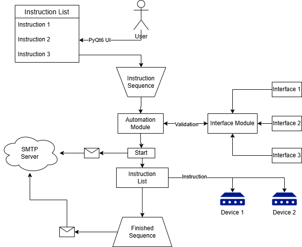
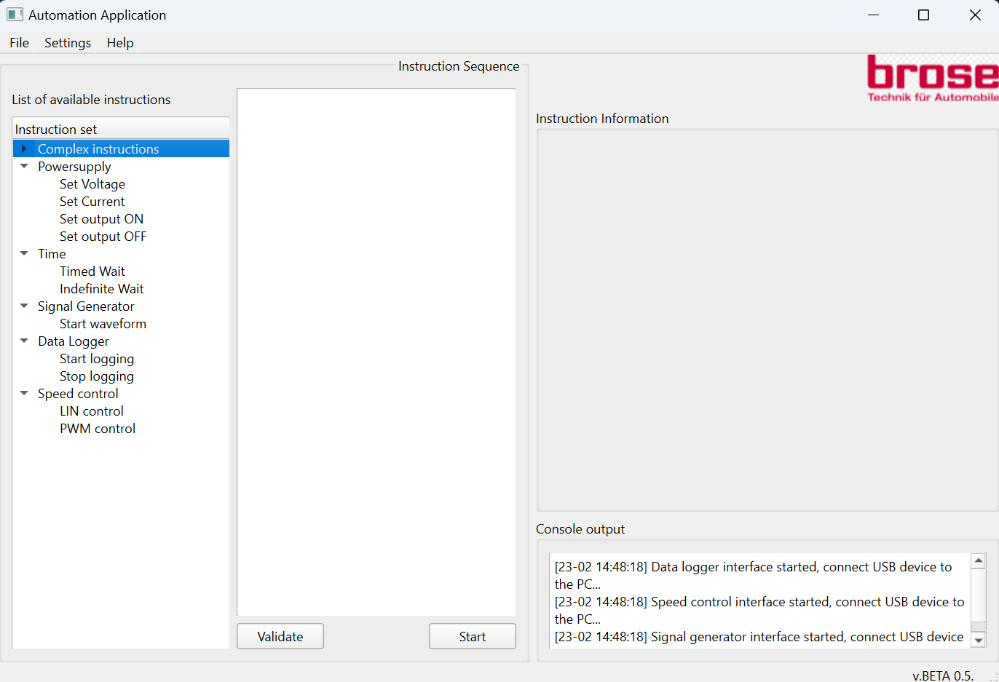
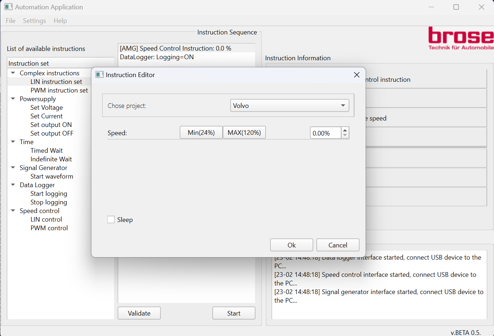
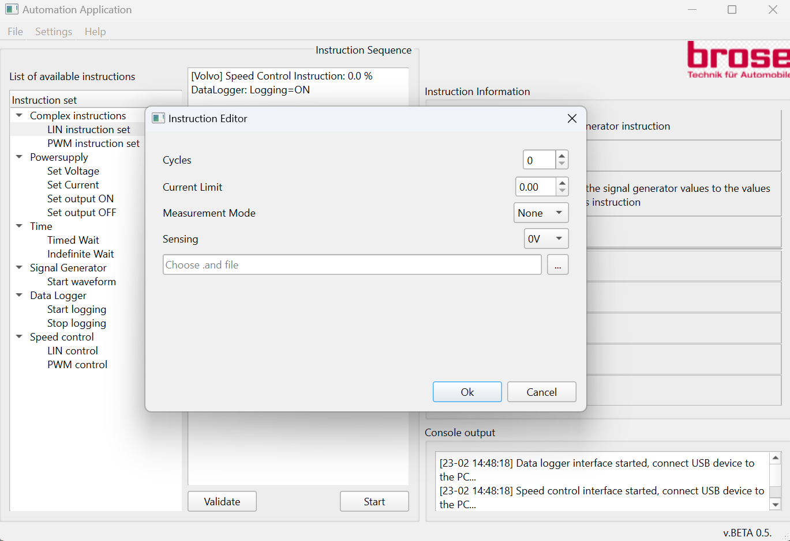
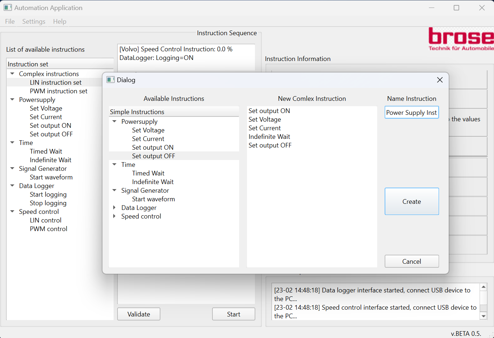
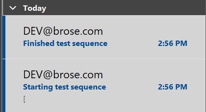
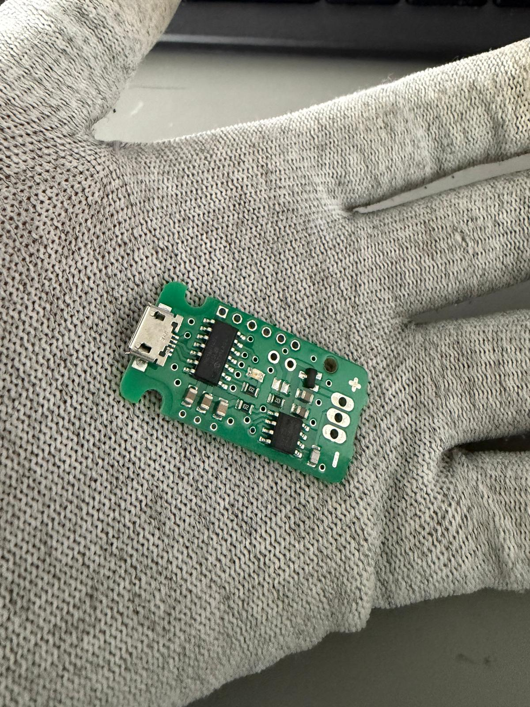
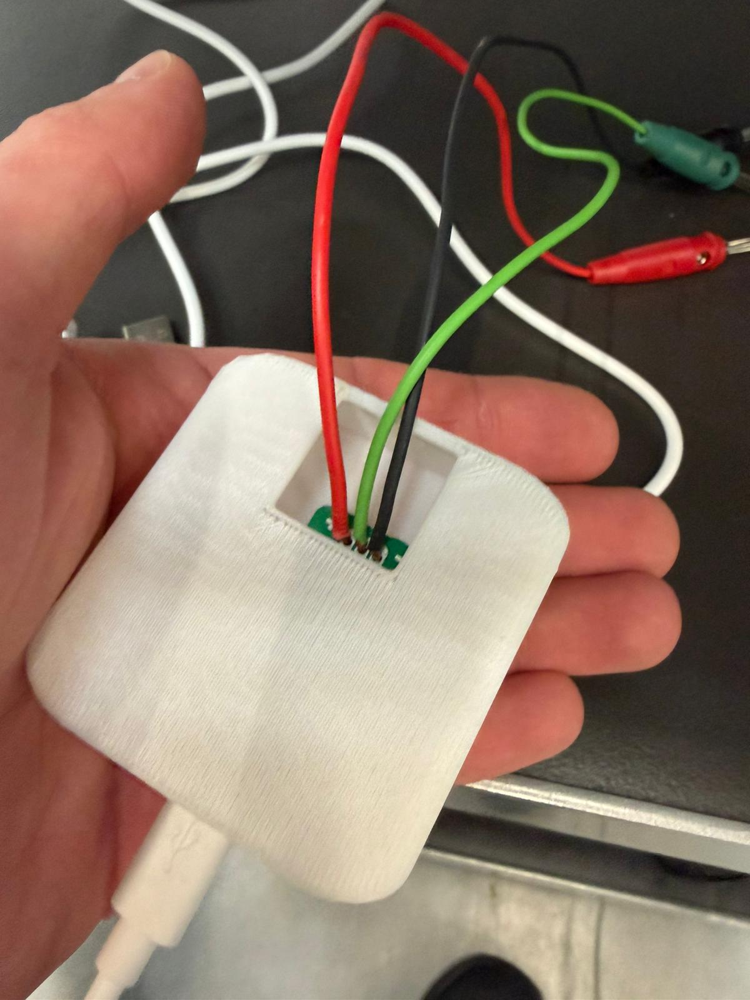

The Brose testing team was manually starting every single Electrical test, which included setting up output voltage,
starting logging of data using data loggers, requesting specific speed for every project based on test requirements etc.
This process took a lot of repetitive tasks which were prone to errors, leading to waste of valuable time during
working hours.
Also by doing test manually using equipment during out of office hours was out of reach.
Ingestion: Users operate with application via PyQt6 UI where he will come across instructions list, instructions
sequence, instruction information and console output. There are 2 ways of creating instruction sequence, first one by selecting
instruction from the instructions list where user will be able to build his own instruction sequence, and second one by loading
the instruction sequence stored in .json format (if it exists localy).
Every single instruction group has its own class (which are subclass of BaseInstruction class), its own interface, validation
and execution processes.
Validation: When instruction sequence has been created, the next step is validation. Automation module, which is
delegated to handle the workflow of iteration threw instructions, validates all of the instructions inside the instruction list.
If for example, equipment is not connected to the PC or some instruction do not pass validation script, it does not let user
continue with execution.
Execution: After it has been validated that all of the instructions are valid, user can proceed with execution of
instruction sequence. Automation module communicates with Interface module, which role is to communicate with other interfaces,
and sends it instruction by instruction. Those instructions are then, after filtering through corresponding interfaces, being
handled by compatible processes.
Finish and Cleanup: As the last instruction passes through this process, system sends signal that the operation has
been finished and Automation module “cleans up” sequence, making itself ready for next validation and execution process.
Key Implementation Details
• The application has been developed so it can be modular at easily adopted based on the needs of users.
• At the start and end of the execution, mailing system send chosen users mail about applications status.
• Logging has been implemented in almost every single segment of applications workflow, so developers can easily detect problem
if bug appears.
• Code is appropriately commented so that other developers can easily understand critical parts of the project.
Challenges & Solutions
• Challenge: - While implementing communication with specific signal generator device, I noticed that they had support
for no older version than Python 3.9 and application was developed in Python 3.12.
• Solution: - I created a microservice that communicated with Python 3.9 script using FastAPI, which was the best
possible workaround at the moment.
• Challenge: - While working on LIN communication feature, the current device that was used did not have any kind of
support for python development.
• Solution: - USBLini. Cheaper opensource alternative that was a perfect fit for this purpose. By analyzing how LIN devices
worked, I recreated signals and was able to completely bypass this problem: https://www.fischl.de/usblini/
Visuals & Schematics

Diagram of application's workflow
This diagram shows how different modules of the application communicate with each other and how data flows through the system.

Automation App start screen
On the left side, there is instruction list, in the middle instruction sequence and on the right side, there is instruction
information and console output.

Instruction editor window - Speed Control Device
This is the window where user can edit instruction parameters. In this case, user is editing parameters for speed control device.

Instruction editor window - Signal generator device
Here is another example of instruction editor window, but this time for signal generator device. As you can see, parameters are different

Complex instruction dialog
This dialog is used for creating complex instructions, which are basicaly combinations of multiple instructions.

Mails recieved through app
This is an example of mail that user receives when execution starts and finishes. It contains information about the status of execution and
in case of failure, it contains information about the error that caused it.
Video presentation of app's functionality
In this video user is saving created instruction sequence consisted of time instructions, loading it, validating it and executing it.
Also you can see uppon starting the sequence mailing dialog oppens up where user can choose who will receive mail about status of execution.

USBLini
Device used for LIN communication

USBLini in a box
Solidered banana plugs for easier connection with other devices and placed in a box, that was designed and printed out by me,
for better protection.
Impact
• Saved approximately 18 hours of manual work per week.
• Reduced human error rate by significant percent.
• Eliminated the need of using standard LIN communication devices for electrical testing, which
company was paying over 6,000€ per year (each).
• Increased testing capacity by 70%, which led to huge saving in terms of external laboratories.
• While working on this project, I stubbled uppon security vulnerabilities for which I recieved a reward after reporting it.